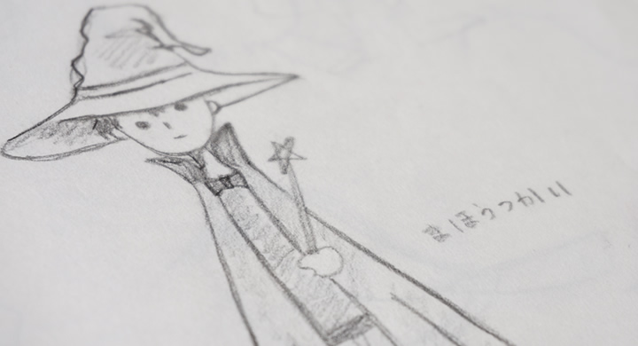

バッタになりたい魔法使い
ウェブ仕掛け絵本
バッタになりたい魔法使い
合い言葉は、バッタになっちゃえ！
「バッタになりたい魔法使い」は、ライトノベル作家になりたいひろましゃと、イラストレーターになりたいコモモの利害が一致し、手始めに絵本作ってみようかという話になって作りました。
合い言葉は、バッタになっちゃえ！・・まぁ、とにかく絵本を読んでみてください(^ ^)
| コモモ | え |
|---|---|
| ひろましゃ | おはなし、JavaScriptとか |
パララックス効果を利用したウェブ仕掛け絵本
絵本の制作にあたって、ひろましゃが、はじめてのJavaScriptに挑戦しました。ブログで作り方を解説していますので、興味のある方は、こちらの記事をご覧ください。